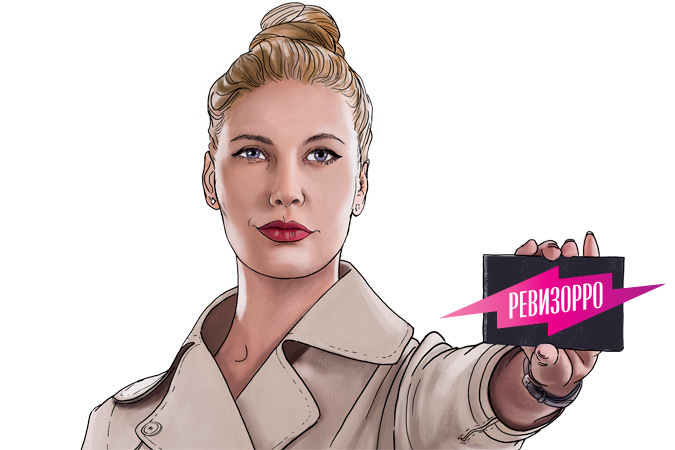
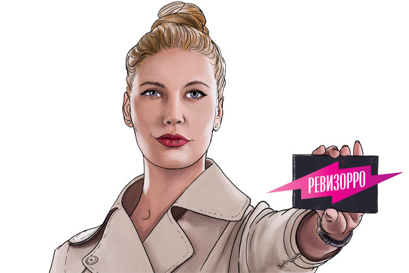

Психопат похищает и убивает молодых женщин по всему Среднему Западу Америки. ФБР поручает агенту Клариссе Старлинг встретиться с заключенным-маньяком, который мог бы объяснить следствию психологические мотивы серийного убийцы и тем самым вывести на его след.
Мы знакомимся с человеком, поймавшим Ганнибала Лектера, — специальным агентом ФБР Уиллом Грэмом. После ареста Лектера, который едва не стоил Грэму жизни, Уилл уходит со службы в Бюро. Однако появление нового жуткого серийного убийцы заставляет Грэма вернуться на службу. Теперь Уиллу нужен совет от опытного специалиста по психическим аномалиям, и он обращается за помощью к своему старому знакомому…
По прошествии десяти лет тревожного молчания гениальный Ганнибал Лектер пишет письмо агенту ФБР Кларисе Старлинг, предлагая ей возобновить их прервавшуюся интеллектуальную дуэль. Маньяк собирается пригласить Клариссу на самый опасный ужин в ее жизни.
Ежедневная утренняя информационно-развлекательная программа с лучшими телеведущими страны.
Ежедневная информационная программа, сообщающая о наиболее важных событиях в стране и в мире.
Веселые приключения неразлучной парочки — хулигана Волка и смышленого Зайца. Любимые с детства сцены погонь, ссор и примирений, шутки и мелодии.
Во время традиционной Прямой линии с Президентом России Владимир Путин ответит на вопросы населения.
Захватывающая история поиска мебельного гарнитура служителем православной церкви, предводителем дворянства и легендарным "великим комбинатором" Остапом Бендером.
Миссия конференции состоит в распространении уникальных идей. Темы лекций разнообразны: наука, искусство, дизайн, политика, культура, бизнес, глобальные проблемы, технологии и развлечения.
Миссия конференции состоит в распространении уникальных идей. Темы лекций разнообразны: наука, искусство, дизайн, политика, культура, бизнес, глобальные проблемы, технологии и развлечения.
Ежедневная информационная программа, сообщающая о наиболее важных событиях в стране и в мире.
Русский балет. История о превращенной злым колдуном в лебедя девушке. Ей поклялся в любви принц, но, обманутый колдовством, клятвы верности не сдержал; что ждет влюбленных - победа над темными чарами или смерть?
Live-шоу от сотрудников "Яндекса" о том, как создавать простые, понятные и красивые интерфейсы.
Капитал-шоу «По́ле чуде́с» — российская телевизионная игра, производственной телекомпании «ВИD», транслируемая на «Первом канале», российский аналог американской телепрограммы «Колесо Фортуны», имеющая заметные отличия от оригинала.
«Время приключений» — мультипликационный сериал, повествующий о приключениях мальчика Финна и его друга — волшебного пса английского бульдога Джейка в постапокалиптическом мире, называемом «Земли Ооо», от студии Cartoon Network.
Кобб — талантливый вор, лучший из лучших в опасном искусстве: он крадет ценные секреты из глубин подсознания во время сна. Редкие способности Кобба сделали его ценным игроком в мире промышленного шпионажа, но они же превратили его в вечного беглеца и лишили всего, что он когда-либо любил. И вот у Кобба появляется шанс исправить ошибки.
Оля Чумакова, приехав в родную деревню в отпуск, знакомится с молодым морячком, который прислал ей письмо со своей фотографией, но эта встреча глубоко ранит ее девичье самолюбие. С помощью сестры Кати Оля принимает решение проучить его: она изображает, что у нее завязался роман с водителем грузовика Асхатом, с которым она работает на уборке картофеля. Но так случилось, что встретив Асхата, от которого ушла жена, оставив на его попечение маленькую дочку, Оля полюбила его всем сердцем.
Эта программа о проблемах современного сельского хозяйства, о том, чем и как живет современная российская деревня. Россия – страна уникальная. Она богата не только огромной территорией и непревзойденными природными ресурсами, но и духовно-культурными традициями – особенно в сельской местности.
Рожденные полозами. В студии программы - заводчик маисовых полозов Дмитрий Удалов.Почему у кузнечика уши на ногах? На вопросы телезрителей вместе с Иваном Затевахиным отвечает доктор биологических наук Андрей Маталин.
"Вести", которые можно смело назвать главной информационной программой страны, всегда являлись визитной карточкой телеканала. В прямом эфире ведущие знакомят зрителей с основными политическими, социальными, культурными и спортивными новостями дня.
Заповедные места Ленинградской области… Они не за горами и долами, - они у нас здесь рядом, буквально "под боком". Это те самые окрестности Петербурга, о которых мы знаем, но редко когда бываем. Они "заповедные", то есть, завещанные нам предками благодатной своей природой и уникальной историей. В телевизионное путешествие по городам и весям мы отправимся вместе с ведущим Степаном Бекетовым.
Гражданское общество – это общество активных и свободных граждан, знающих и уважающих законы своей страны. "Гражданское общество" – это программа, где детально исследуются и обсуждаются те проблемы, которые возникают в этой сфере жизни и деятельности россиян.
Ведущие программы - мастер спорта международного класса по фигурному катанию, чемпионка и красавица Анна Семенович, и кнезитерапевт, доктор медицинских наук, профессор Сергей Михайлович Бубновский расскажут, как естественно вернуть здоровое состояние организма с помощью правильного движения.
Передача является российским аналогом американского шоу «Самое смешное видео», которая выходит на ABC. Демонстрируются любительские кадры, за кадром идёт шуточная озвучка. Видеоролики озвучивают актёры Михаил Палатник, Алексей Никульников и Сергей Каплунов.
"Вести", которые можно смело назвать главной информационной программой страны, всегда являлись визитной карточкой телеканала. В прямом эфире ведущие знакомят зрителей с основными политическими, социальными, культурными и спортивными новостями дня.
"Вести", которые можно смело назвать главной информационной программой страны, всегда являлись визитной карточкой телеканала. В прямом эфире ведущие знакомят зрителей с основными политическими, социальными, культурными и спортивными новостями дня.
Полемическое ток-шоу с Борисом Корчевниковым. Об этих проблемах не пишут в СМИ. Но они существуют! Это реальные проблемы обычных людей, оказавшихся в сложных жизненных ситуациях.
"Вести", которые можно смело назвать главной информационной программой страны, всегда являлись визитной карточкой телеканала. В прямом эфире ведущие знакомят зрителей с основными политическими, социальными, культурными и спортивными новостями дня.
"Вести", которые можно смело назвать главной информационной программой страны, всегда являлись визитной карточкой телеканала. В прямом эфире ведущие знакомят зрителей с основными политическими, социальными, культурными и спортивными новостями дня.
Ток-шоу известного шоумена, ведущего и оратора В. Соловьева, где публичные люди встречаются и отстаивают свои убеждения на злобу дня.
Х/ф по одноименному произведению Льюиса Кэролла, о девочке, которая хочет сбежать от своей жизни и попадает в странный и невероятный мир.
"Специальный корреспондент" - это популярная публицистическая программа, которая выходит на телеканале "Россия" с сентября 2002 года. Каждую неделю один из ведущих рассказывает в своем фильме-репортаже о какой-либо актуальной проблеме, существующей в современном обществе, посвящает зрительскую аудиторию в подробности наиболее значимых для страны и мира событий.
«Ерала́ш» — детский юмористический киножурнал, выпускавшийся с 1974 года, сначала в кинотеатрах, а потом на телевидении. Художественный руководитель журнала — Борис Грачевский.
«Ерала́ш» — детский юмористический киножурнал, выпускавшийся с 1974 года, сначала в кинотеатрах, а потом на телевидении. Художественный руководитель журнала — Борис Грачевский.

Молодая мать, отчаявшись найти лекарство от таинственного заболевания своей дочери Шэрон, отказывается отдать ее в психиатрическую лечебницу. Вместе с Шэрон она отправляется в Сайлент Хилл, город, название которого ее дочь постоянно твердит во сне.Несмотря на сопротивление мужа, Роуз убеждена, что найдет там ответы, в которых так нуждается. Но когда они подъезжают к заброшенному городу, на дороге появляется таинственная фигура, Роуз резко тормозит, и машина попадает в аварию… Придя в себя, она обнаруживает, что Шэрон исчезла…
Сериал о молодой паре, которая поселяется в старинном доме в Нью-Йорке. Вскоре они обнаруживают, что вокруг них происходят странные события, а стены дома хранят много мрачных тайн.
В Институт Ксавье поступает сообщение, что в Японии имеют место случаи загадочного исчезновения мутантов;Вскоре они узнают, что если они не подоспеют на помощь, жизни всех мутантов угрожает опасность - на них охотятся учёные-террористы, торгующие органами мутантов, и за всем этим стоит старый враг Людей Икс.
В Институт Ксавье поступает сообщение, что в Японии имеют место случаи загадочного исчезновения мутантов;Вскоре они узнают, что если они не подоспеют на помощь, жизни всех мутантов угрожает опасность - на них охотятся учёные-террористы, торгующие органами мутантов, и за всем этим стоит старый враг Людей Икс.
В Институт Ксавье поступает сообщение, что в Японии имеют место случаи загадочного исчезновения мутантов;Вскоре они узнают, что если они не подоспеют на помощь, жизни всех мутантов угрожает опасность - на них охотятся учёные-террористы, торгующие органами мутантов, и за всем этим стоит старый враг Людей Икс.
В Институт Ксавье поступает сообщение, что в Японии имеют место случаи загадочного исчезновения мутантов;Вскоре они узнают, что если они не подоспеют на помощь, жизни всех мутантов угрожает опасность - на них охотятся учёные-террористы, торгующие органами мутантов, и за всем этим стоит старый враг Людей Икс.
В основе каждой серии - мистические истории героев, которые в какой-то момент своей жизни обратились за помощью к магам, биоэнергетикам, экстрасенсам. Главная задача программы - разобраться в каждой истории и найти общечеловеческий выход, прибегнув к помощи экспертов: психолога, доктора, священники.
В основе каждой серии - мистические истории героев, которые в какой-то момент своей жизни обратились за помощью к магам, биоэнергетикам, экстрасенсам. Главная задача программы - разобраться в каждой истории и найти общечеловеческий выход, прибегнув к помощи экспертов: психолога, доктора, священники.
В основе каждой серии - мистические истории героев, которые в какой-то момент своей жизни обратились за помощью к магам, биоэнергетикам, экстрасенсам. Главная задача программы - разобраться в каждой истории и найти общечеловеческий выход, прибегнув к помощи экспертов: психолога, доктора, священники.
Тайны повсюду... В рисунках первобытного человека и на страницах древних рукописей, в камнях египетских пирамид и в секретных разработках ученых. Чтобы найти к ним путь, нужно увидеть то, что скрыто, и расшифровать.
сериал повествует о двух братьях — охотниках за нечистью, которые путешествуют по США на чёрной Chevrolet Impala 1967 года, расследуя паранормальные явления, многие из которых основаны на городских легендах и фольклоре, а также сражаются с порождениями зла: демонами, призраками и другой нечистью. Производством шоу занимается компания Warner Bros. Television вместе с Wonderland Sound and Vision.
сериал повествует о двух братьях — охотниках за нечистью, которые путешествуют по США на чёрной Chevrolet Impala 1967 года, расследуя паранормальные явления, многие из которых основаны на городских легендах и фольклоре, а также сражаются с порождениями зла: демонами, призраками и другой нечистью. Производством шоу занимается компания Warner Bros. Television вместе с Wonderland Sound and Vision.
сериал повествует о двух братьях — охотниках за нечистью, которые путешествуют по США на чёрной Chevrolet Impala 1967 года, расследуя паранормальные явления, многие из которых основаны на городских легендах и фольклоре, а также сражаются с порождениями зла: демонами, призраками и другой нечистью. Производством шоу занимается компания Warner Bros. Television вместе с Wonderland Sound and Vision.
сериал повествует о двух братьях — охотниках за нечистью, которые путешествуют по США на чёрной Chevrolet Impala 1967 года, расследуя паранормальные явления, многие из которых основаны на городских легендах и фольклоре, а также сражаются с порождениями зла: демонами, призраками и другой нечистью. Производством шоу занимается компания Warner Bros. Television вместе с Wonderland Sound and Vision.
сериал повествует о двух братьях — охотниках за нечистью, которые путешествуют по США на чёрной Chevrolet Impala 1967 года, расследуя паранормальные явления, многие из которых основаны на городских легендах и фольклоре, а также сражаются с порождениями зла: демонами, призраками и другой нечистью. Производством шоу занимается компания Warner Bros. Television вместе с Wonderland Sound and Vision.
сериал повествует о двух братьях — охотниках за нечистью, которые путешествуют по США на чёрной Chevrolet Impala 1967 года, расследуя паранормальные явления, многие из которых основаны на городских легендах и фольклоре, а также сражаются с порождениями зла: демонами, призраками и другой нечистью. Производством шоу занимается компания Warner Bros. Television вместе с Wonderland Sound and Vision.
сериал повествует о двух братьях — охотниках за нечистью, которые путешествуют по США на чёрной Chevrolet Impala 1967 года, расследуя паранормальные явления, многие из которых основаны на городских легендах и фольклоре, а также сражаются с порождениями зла: демонами, призраками и другой нечистью. Производством шоу занимается компания Warner Bros. Television вместе с Wonderland Sound and Vision.
сериал повествует о двух братьях — охотниках за нечистью, которые путешествуют по США на чёрной Chevrolet Impala 1967 года, расследуя паранормальные явления, многие из которых основаны на городских легендах и фольклоре, а также сражаются с порождениями зла: демонами, призраками и другой нечистью. Производством шоу занимается компания Warner Bros. Television вместе с Wonderland Sound and Vision.
сериал повествует о двух братьях — охотниках за нечистью, которые путешествуют по США на чёрной Chevrolet Impala 1967 года, расследуя паранормальные явления, многие из которых основаны на городских легендах и фольклоре, а также сражаются с порождениями зла: демонами, призраками и другой нечистью. Производством шоу занимается компания Warner Bros. Television вместе с Wonderland Sound and Vision.

Еженедельная программа "Территория заблуждений" вместе с известными учеными всего мира отправится в увлекательное путешествие на разные континенты Земли, чтобы найти ответы на трудные, но интересующие очень многих людей вопросы...
Всё лучшее - жаворонкам! Программа "С бодрым утром!" - это микс важной информации и народного юмора. Выпуски новостей и лучшее видео из интернета. Жизнь, которая бывает изобретательнее любых сценаристов. Не проспите!
Объективная и независимая картина дня. Реальная политика и экономика, важнейшие события в России и в мире, громкие заявления, официальные лица, ключевые эксперты и персоны нон-грата.
Еженедельная программа "Территория заблуждений" вместе с известными учеными всего мира отправится в увлекательное путешествие на разные континенты Земли, чтобы найти ответы на трудные, но интересующие очень многих людей вопросы...
Исследователи священных текстов утверждают: наши предки жили по 500 лет, умели летать, излечивали самые разные недуги. Кем же они были?
Уникальная программа "Экстренный вызов" поможет зрителям быть в курсе самых громких чрезвычайных происшествий, судебных процессов и криминальных историй. Главный принцип работы журналистов "Экстренного вызова" — соблюдение журналистской этики, поэтому рассказы даже о самых трагичных событиях будут сдержаны и объективны.
Объективная и независимая картина дня. Реальная политика и экономика, важнейшие события в России и в мире, громкие заявления, официальные лица, ключевые эксперты и персоны нон-грата.
Участники программы — люди самых разных профессий, достатка, возраста, увлечений, жизненных устремлений и кулинарных пристрастий. И даже уметь хорошо готовить им совершенно не обязательно. Важно вот что: герои шоу должны быть уверены в том, что, пригласив гостей на "Званый ужин", смогут создать для них нечто большее, чем просто ужин — незабываемую атмосферу праздника, уюта и непринужденного общения.
Китайский полицейский Хэн, посаженный в тюрьму по ложному обвинению, узнает о смерти своего брата, и, вырвавшись на свободу, начинает поиски его убийцы. Для этого он отправляется в Штаты, где влюбляется в дочь главы противостоящего клана, который, скорее всего, и убил его брата.
Новый документальный цикл - это эксклюзивные интервью, сенсационные факты, громкие разоблачения, и истории очевидцев. Авторы цикла дадут ответ на простые, и в то же время сложные вопросы: почему количество природных катастроф за последние годы выросло в несколько раз? Может ли питьевая вода стать причиной глобальной войны? Какие опасности таит в себе здоровый образ жизни? Почему лекарств в аптеках становится всё больше, а пользы от них - всё меньше?
В это сложно поверить, но возможно, человек произошел вовсе не от обезьяны, а теория Дарвина об эволюции человека - просто выдумка. Вальденбургский монстр, кыштымский карлик, мексиканский человек-дракон, вытянутые черепа, кости гигантов - что это такое, результат генетических экспериментов пришельцев или случайная мутация? Правда ли пришельцы тысячи лет назад экспериментировали с земными генами?
Объективная и независимая картина дня. Реальная политика и экономика, важнейшие события в России и в мире, громкие заявления, официальные лица, ключевые эксперты и персоны нон-грата.
Бывший агент элитных спецслужб Люк Райт случайно спасает из цепких лап русских бандитов девочку-вундеркинда Мэй. Лишь ей известен код сейфа с десятками миллионов долларов, принадлежащих триадам, и теперь за ней охотятся все мерзавцы и головорезы Нью-Йорка. Так на улицах и дорогах города начинается головокружительная и безостановочная битва китайских ассассинов, русской мафии и отрядов продажных полицейских с друг другом за Мэй, у которой теперь есть одна надежда - ее защитник.
Объективная и независимая картина дня. Реальная политика и экономика, важнейшие события в России и в мире, громкие заявления, официальные лица, ключевые эксперты и персоны нон-грата.
Остроумный полицейский Скотт - специалист по переговорам с преступниками. Его дар убеждения позволяет освобождать заложников быстро и безопасно. Когда банда преступников атакует ювелирный магазин, Скотт начинает подготовку к переговорам. Рядовое задание превращается в личную вендетту - среди заложников оказывается любимая девушка Скотта.
В центре истории - молодая женщина, у которой куча проблем, да еще и приходится скрываться от мафии. Она решает притвориться своей богатой сестрой-близняшкой и узнает, что за той тоже идет охота.
На планете Земля существует вымышленная страна, где живут забавные круглые зверушки. Здесь новый день не похож на предыдущий, обитатели чудесного места постоянно придумывают себе захватывающие приключения.
Никакой политики и экономики, только позитивные самые свежие новости из мира российского и зарубежного шоу-бизнеса. Скандалы, редчайшие съемки и абсолютные эксклюзивы.
На планете Земля существует вымышленная страна, где живут забавные круглые зверушки. Здесь новый день не похож на предыдущий, обитатели чудесного места постоянно придумывают себе захватывающие приключения.
Обновленная версия приключений неутомимого дятла Вуди. Недаром Вуди называют американским дятлом номер один. Песня из мультфильма про этого дятла возглавила хит-парады аж в 48-м году, а его смех до сих пор является фирменной маркой американской мультипликации.
Он действительно доктор, а не шоумен в белом халате! Он реально рассказывает, как сохранить здоровье наших любимых "котят", "медвежат", "малышей" и "солнышек", а не устраивает клоунаду перед камерой.Его советам можно доверять, потому что он - врач высшей категории и кандидат медицинских наук!
Никакой политики и экономики, только позитивные самые свежие новости из мира российского и зарубежного шоу-бизнеса. Скандалы, редчайшие съемки и абсолютные эксклюзивы.
В новом сезоне команда "Ревизорро" отправляется в путь во главе с новой ведущей проекта - Ольгой Романовской. Смелая и темпераментная девушка готова выстоять в любых конфликтах ради победы. Победы в борьбе за повышение качества сервиса и услуг по всей стране. В арсенале ведущей находится высокотехничный чемоданчик "Ревизорро", белые перчатки, а также навыки боксерского спарринга.
В новом сезоне команда "Ревизорро" отправляется в путь во главе с новой ведущей проекта - Ольгой Романовской. Смелая и темпераментная девушка готова выстоять в любых конфликтах ради победы. Победы в борьбе за повышение качества сервиса и услуг по всей стране. В арсенале ведущей находится высокотехничный чемоданчик "Ревизорро", белые перчатки, а также навыки боксерского спарринга.
В новом сезоне команда "Ревизорро" отправляется в путь во главе с новой ведущей проекта - Ольгой Романовской. Смелая и темпераментная девушка готова выстоять в любых конфликтах ради победы. Победы в борьбе за повышение качества сервиса и услуг по всей стране. В арсенале ведущей находится высокотехничный чемоданчик "Ревизорро", белые перчатки, а также навыки боксерского спарринга.
В новом сезоне команда "Ревизорро" отправляется в путь во главе с новой ведущей проекта - Ольгой Романовской. Смелая и темпераментная девушка готова выстоять в любых конфликтах ради победы. Победы в борьбе за повышение качества сервиса и услуг по всей стране. В арсенале ведущей находится высокотехничный чемоданчик "Ревизорро", белые перчатки, а также навыки боксерского спарринга.
В новом сезоне команда "Ревизорро" отправляется в путь во главе с новой ведущей проекта - Ольгой Романовской. Смелая и темпераментная девушка готова выстоять в любых конфликтах ради победы. Победы в борьбе за повышение качества сервиса и услуг по всей стране. В арсенале ведущей находится высокотехничный чемоданчик "Ревизорро", белые перчатки, а также навыки боксерского спарринга.
В новом сезоне команда "Ревизорро" отправляется в путь во главе с новой ведущей проекта - Ольгой Романовской. Смелая и темпераментная девушка готова выстоять в любых конфликтах ради победы. Победы в борьбе за повышение качества сервиса и услуг по всей стране. В арсенале ведущей находится высокотехничный чемоданчик "Ревизорро", белые перчатки, а также навыки боксерского спарринга.
В новом сезоне команда "Ревизорро" отправляется в путь во главе с новой ведущей проекта - Ольгой Романовской. Смелая и темпераментная девушка готова выстоять в любых конфликтах ради победы. Победы в борьбе за повышение качества сервиса и услуг по всей стране. В арсенале ведущей находится высокотехничный чемоданчик "Ревизорро", белые перчатки, а также навыки боксерского спарринга.
Три сезона Лена Летучая проверяла отели и рестораны по всей стране. Не ради себя, а во имя высоких стандартов сервиса. Многие не прошли проверку. Есть те, кто не согласен с приговором "Ревизорро". Те, кто считает, что их наказали несправедливо. Теперь у владельцев заведений есть шанс защитить свою честь и бизнес! Прийти в студию и высказать свои претензии лично Елене Летучей.
В новом сезоне команда "Ревизорро" отправляется в путь во главе с новой ведущей проекта - Ольгой Романовской. Смелая и темпераментная девушка готова выстоять в любых конфликтах ради победы. Победы в борьбе за повышение качества сервиса и услуг по всей стране. В арсенале ведущей находится высокотехничный чемоданчик "Ревизорро", белые перчатки, а также навыки боксерского спарринга.
Сериал рассказывает о приключениях братьев Сэма и Дина Винчестеров, которые путешествуют по Соединенным Штатам, расследуют паранормальные явления, многие из которых основаны на американских городских легендах и фольклоре, и сражаются с порождениями зла, такими как демоны и призраки.
Документальный фильм о недавних попытках "Комиссии по охране фауны" Флориды контролировать резко растущую популяцию тигрового питона.
Глубоко в Африке пролегает долина Замбези, в центре которой находится огромное озеро, где трое львов присоединяются к прайду.
Африканская саванна видела тысячи разных битв. Как же выживают слоны, придерживаясь диеты, которая любого вегетарианца поставила бы на колени?
Каждый эпизод является хроникой, рассказывающей о методах тренировки собаки и солдата, которые затем попадают в военную мировую элиту.
Каждый эпизод является хроникой, рассказывающей о методах тренировки собаки и солдата, которые затем попадают в военную мировую элиту.
Поразительные кадры из жизни диких животных, снятые кинооператорами и туристами, случайно оказавшимися в нужном месте в нужное время.
Пять молодых львов должны покорить пустыню Намиб и создать своё собственное королевство в месте, полном опасности и бесконечного голода.
Россия простирается на 11 часовых поясах и располагается на территории двух континентов, от центра Европы до Тихого океана. Получив уникальную возможность впервые увидеть дикую природу во всем ее многообразии, зрители совершат телепутешествие с востока на запад, через горы, пустыни, вулканы, озера и арктические льды. При съемках программы использована самая современная кинематографическая техника, что поможет наиболее ярко и красочно рассказать об уникальных природных богатствах и заповедниках необъятной России.
Африканская саванна видела тысячи разных битв. Как же выживают слоны, придерживаясь диеты, которая любого вегетарианца поставила бы на колени?
Доминируя над всей территорией Южной Америки, река Амазонка дала жизнь многочисленным видам редких обитателей дикой природы. Она стала домом для таких необычных ее представителей, как красномордая уакари или короткохвостая обезьяна. Она подарила приют и служит глубоким убежищем для ягуаров, гарпий и амазонских ламантинов. Тысячи миль непроходимых густых лесов скрывают от нас удивительный мир, полный необычных примеров выживания и адаптации редких диких животных.